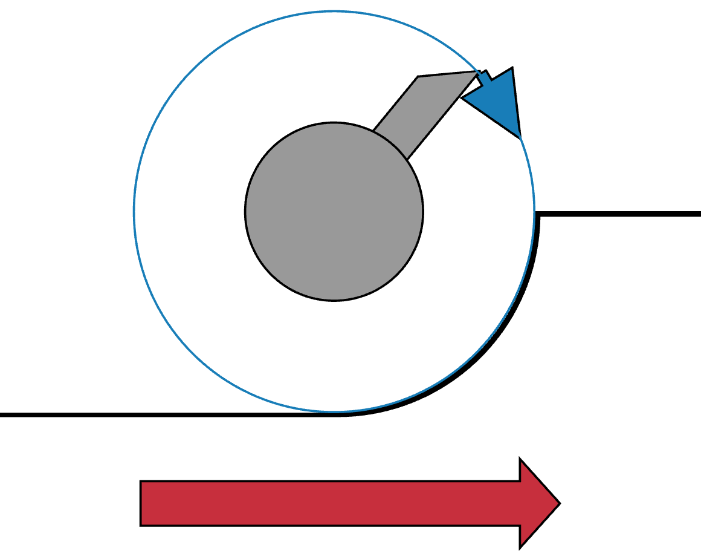

Helical Flutes using a Profiled Cutter

|
|
Control System for Multiple Stepper Motors
Helical Flutes using a Profiled Cutter |
|
The idea behind this approach is you are cutting one flute helically down the entire length of the Z axis. A shaped cutter which is moved along the Z axis to cut one flute, the spindle is indexed, and the whole process is repeated until all the flutes are cut.
Basically, it is the same as multi-start threading.
| Rosette |
No rosette is used for this approach. The shape comes from the cutter's profile.
The headstock is held fixed (the centering block is inserted in the back, and the fading wedge dropped down). |

|
| Spindle |
The spindle is rotated slowly whilst the cutter is moved in the Z direction. The spindle is indexed after each flute has been cut to the desired depth. (This may be multiple passes.) |
|
| Cutting Frame |
The cutting frame selected and the angle of cutting can have great effects on the results achieved. Typically, a horizontal cutting frame is used.
The cutting frame is moved slowly down the Z axis. Movement of the cutter along the Z axis must be synchronized with the spindle, so it really needs automated movement using a lead screw (e.g., a curvilinear slide). Note: a Drill Spindle could be used with this, especially when using specialty cutters. |
|
| Cutter | Use a cutter with a profiled shape which will yield the desired cut. Hold it in a cutting frame, and move it down the whole length. | |
| Rubber | The shape of the rubber has no effect as no rosette is used for this. |
| Screen | Actions | ||||||||
|---|---|---|---|---|---|---|---|---|---|
|
On the Indexing page,
Note: Indexing is not done using this screen; rather the and the buttons on the Synchronization screen use these settings. |
|||||||||
|
On the Z Axis Preferences page,
|
|||||||||
|
On the Synchronization page,
|
| Cutting Downhill | ||||||||||||||||||||||||||||||||||||||||||||||||||||||||||||||||||||||||||||||||||||||||||||||||||||||||||||||||||||||||||||||||||||||||||||||||||||||||||||||||||||||||||||||||||||||||||||||||||||||||||||||||||||||||||||||||||||||||||||||||||||||||||||||||||||||||||||||||||||||||||||||||||||||||||||||||||||||||||||||||||||||||||||||||||||||||||||||||||||||||||||||||||||||||||||||||||||||||||||||||||||||||||||||||||||||||||||||||||||||||||||||||||||||||||||||||||||||||||||||||||||||||||||||||||||||||||||||||||||||||||||||||||||||||||||||||||||||||||||||||||||||||||||||||||||||||||||||||||||||||||||||||||||||||||||||||||||||||||||||||||||||||||||||||||||||||||||||||||||||||||||||||||||||||||||||||||||||||||||||||||||||||||||||||||||||||||||||||||||||||||||||||||||||||||||||||||||||||||||||||||||||||||||||||||||||||||||||||||||||||||||||||||||||||||||||||||||||||||||||||||||||||||||||||||||||||||||||||||||||||||||||||||||||||||||||||||||||||||||||||||||||||||||||||||||||||||||||||||||||

Cutting to the Left |
 Cutting to the Right |
|||||||||||||||||||||||||||||||||||||||||||||||||||||||||||||||||||||||||||||||||||||||||||||||||||||||||||||||||||||||||||||||||||||||||||||||||||||||||||||||||||||||||||||||||||||||||||||||||||||||||||||||||||||||||||||||||||||||||||||||||||||||||||||||||||||||||||||||||||||||||||||||||||||||||||||||||||||||||||||||||||||||||||||||||||||||||||||||||||||||||||||||||||||||||||||||||||||||||||||||||||||||||||||||||||||||||||||||||||||||||||||||||||||||||||||||||||||||||||||||||||||||||||||||||||||||||||||||||||||||||||||||||||||||||||||||||||||||||||||||||||||||||||||||||||||||||||||||||||||||||||||||||||||||||||||||||||||||||||||||||||||||||||||||||||||||||||||||||||||||||||||||||||||||||||||||||||||||||||||||||||||||||||||||||||||||||||||||||||||||||||||||||||||||||||||||||||||||||||||||||||||||||||||||||||||||||||||||||||||||||||||||||||||||||||||||||||||||||||||||||||||||||||||||||||||||||||||||||||||||||||||||||||||||||||||||||||||||||||||||||||||||||||||||||||||||||||||||||||||
When cutting with a spinning cutter, just as on a router, it is a good practice to always cut downhill. This is not always possible, but it typically leaves the smoothest surface.
The choices for the direction to move the cutter (the red arrow) and the cutter's rotation (blue arrow) should be made to ensure downhill cutting happens.
This is an advantage for using a fly cutter over a carbide bit. With a fly cutter, the direction of the cut can be reversed. (For more information about fly cutters vs. carbide bits, see also Cutters on the Cutting Frames page at the Ornamental Turning Book of Knowledge.)
Click on any of the pictures on this page to see bigger images.
 Deg
Deg 
 to cut towards the headstock or
to cut towards the headstock or
 to cut away from the headstock.
to cut away from the headstock. ) before indexing to the next flute.
) before indexing to the next flute.{kind=link}